Every screen held up against Melvin's fourteen images: what still reads as a generic app, and the small moves that bring it into the garden. The brief was "spice it up slightly", so everything here is a nudge, not a rebuild.
#161E11#37412D#59673D#8E9868#889190#94877F#D8DFE3#F1EEE7#DEC09C#B2783D#8CBBD4#BBD8E4#9CBC85#8FAFB4#FEF9F2#F0E9DC#F0C47B#3F80AD#5AB950#1E231D#59673D#DCE0DD#F0E9DC#94877F#2E4A62#C68A3E#A8432AThe sitter under the banyan, the sun burning through the fog behind the tai chi: one bright place, the rest in shade. 808 should keep its light for the sun, the moon and Otto's glow.
The monk above the layered ridges: each ridge paler and hazier than the one in front. 808's ridges are three flat cut-outs with no air between them.
The painted glade, the figure by the lake: the person takes up a sliver of the frame. On Home the cards crowd Otto; the sit screen gets it right.
The moon behind the stone, the ripples in the pond, the raked ring, the ensō. A circle is the one shape the whole board shares, and it's 808's timer, glow and tab bar already.
Raked gravel, stone, moss, weathered wood, paper. The sand tiles were the first step. Stone for the small controls and a faint paper grain would finish it.
A saffron robe, one maple, a thin band of sunset. On the board colour is rare and means something. 808 puts gold on nearly every screen, so it stops meaning anything.
The stones rate how close each screen is to the board now, from one to five. Captured on the simulator with test data.
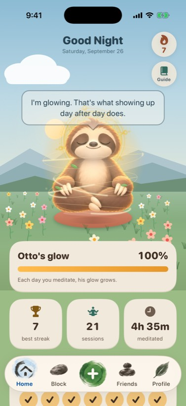
Reads generic: evenly bright from sky to cards. The trophy, figure and clock icons could belong to any fitness app, and the daisies are scattered like confetti.
Zen move: mist between the ridges, his cushion on a raked-sand circle, half the daisies swapped for grass and two stones, ink icons on the tiles.
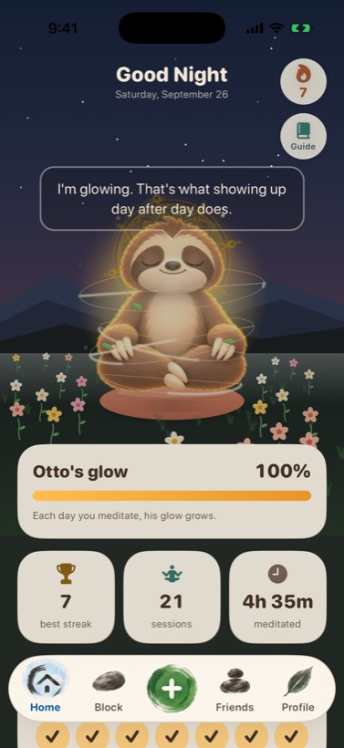
Works: the dark sky, the glass bubble and the dimmed tiles are already close to the board.
Zen move: a big pale moon low behind him, like the figure on the stone before the moon, and fewer stars. The moon and his glow become the only light.
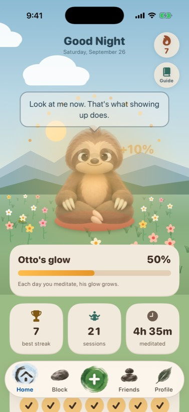
Reads generic: sparks and a floating "+10%" are the language of a game reward.
Zen move: one slow set of ripples spreading out from his cushion, like the forest pond. The number stays, smaller, and fades.
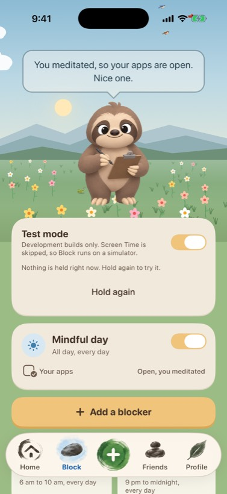
Reads generic: the full-width gold "Add a blocker" is the loudest thing on the screen, and the rows use system symbols.
Zen move: adding becomes a quiet outlined pill, and each blocker gets an ink mark (sun, moon, gate) from the new icon set.
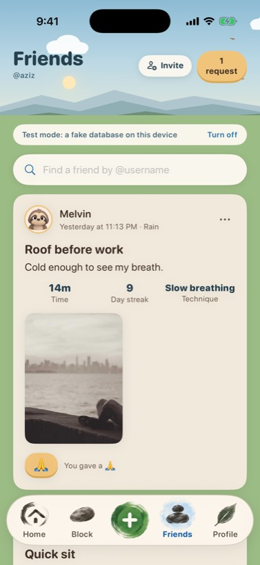
Reads generic: a standard social feed, a 🙏 emoji for the reaction, and a gold "1 request" pill up in the sky.
Zen move: the reaction becomes a small ink ensō stamp, photos sit on a thin paper mat, and the request pill turns stone instead of gold.
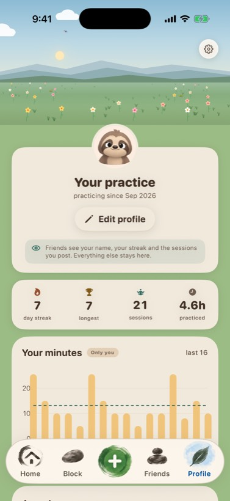
Reads generic: amber chart bars and system icons in the stats row.
Zen move: each bar a single upright brush stroke, ink icons in the stats row, and the award shelf as a row of seals.
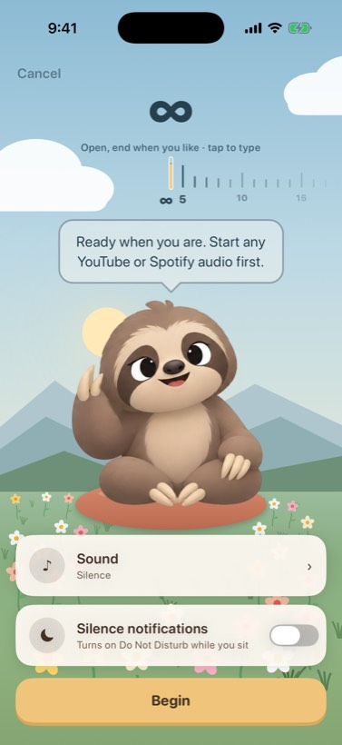
Works: the scene, Otto waving and a single Begin button.
Reads generic: the length ruler looks like a tape measure, with an ∞ glyph and system icons on the pills.
Zen move: fine brush marks for the ticks, "open" drawn as an unclosed ensō, and ink icons on the pills.
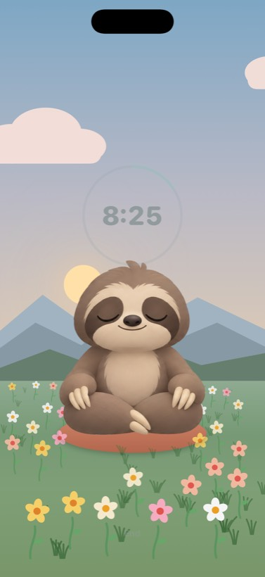
Works: already the calmest screen, and the day turning to dusk is exactly right.
Reads generic: the timer is a thin UI ring, and big bright daisies in the foreground compete with a sitting figure.
Zen move: the ensō timer, grass and stones in front, and slowly drifting mist.
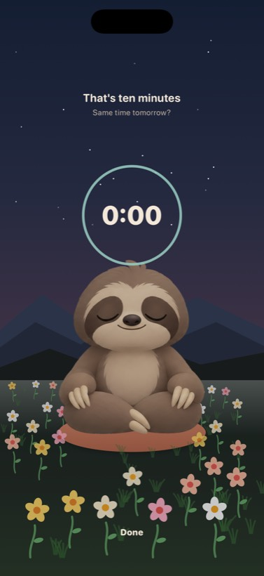
Zen move: the ensō closes as the time runs out and the moon rises behind the ridge. "That's ten minutes" is the right line, and it deserves the quiet serif if we add one.
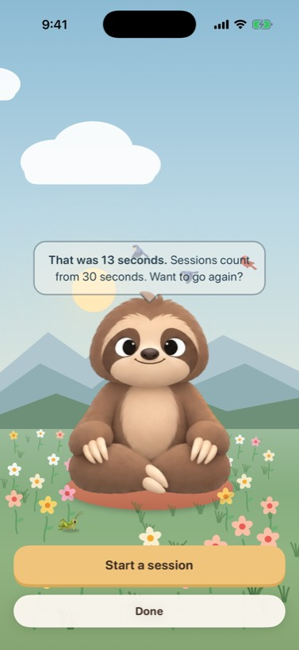
Works: it says it plainly, in his voice.
Zen move: nothing beyond the scene pass.
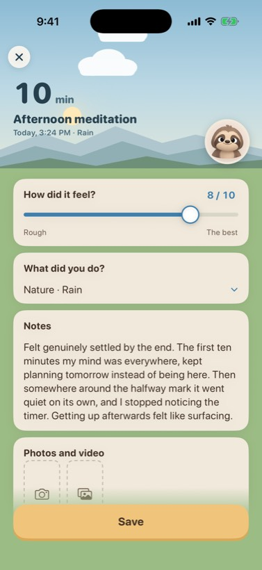
Reads generic: a form, with a blue slider, dashed photo tiles and a gold Save.
Zen move: the slider track as a brush stroke with a small stone for the thumb, and "10 min" in the serif. Leave the rest.
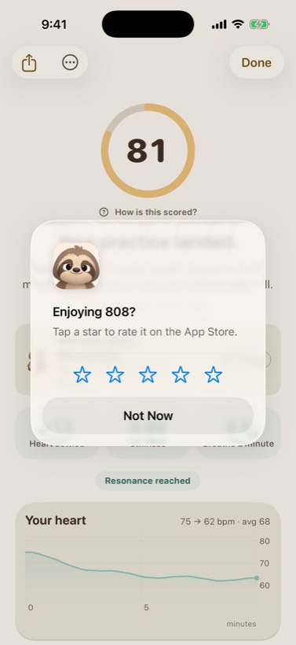
The rating prompt fired in the preview; it's the real third-session prompt, not a bug.
Zen move: moss lines on paper for the charts. The gold score ring stays gold, since it's the one ring that means a score.
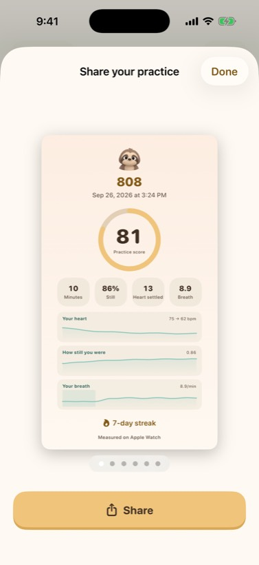
Zen move: a faint paper grain and a small seal with "808" in the corner. This card is the only ad 808 has, so it's worth the care.
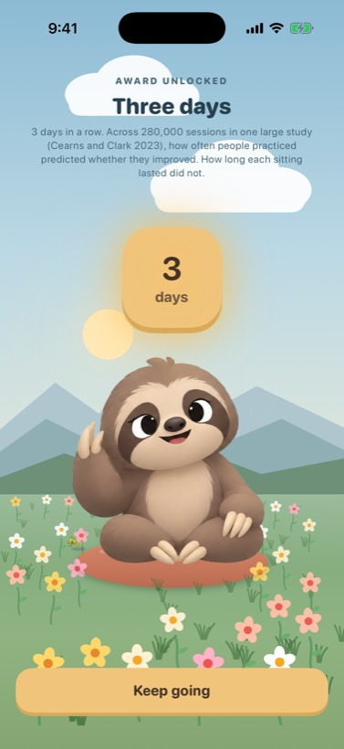
Reads generic: the most game-like screen in the app: a gold squircle, "AWARD UNLOCKED", confetti energy.
Zen move: a vermilion hanko seal pressed onto the sky with a soft stamp, then one line and Keep going.
Reads generic: a stock plan list on blank cream.
Zen move: a band of layered misty ridges with Otto tiny in the distance, the way the painted mountain does it, and the plans on sand below.
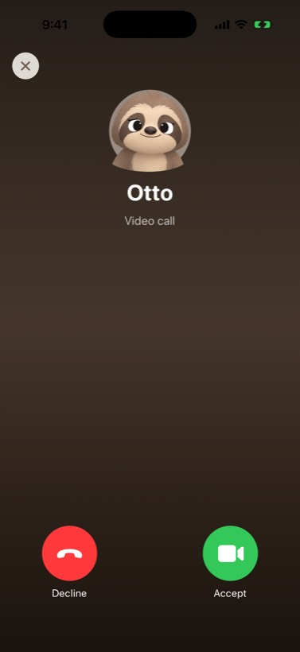
Works: the joke lands. Leave it.
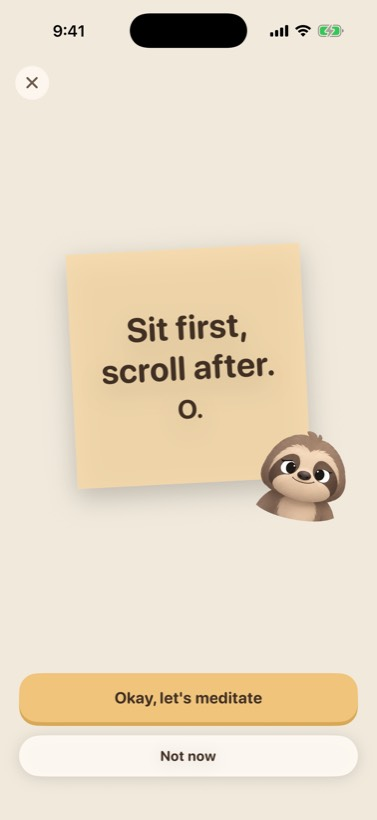
Reads generic: a yellow sticky note on a blank page.
Zen move: an omikuji, the folded paper fortune people tie up at a shrine, with the same words.
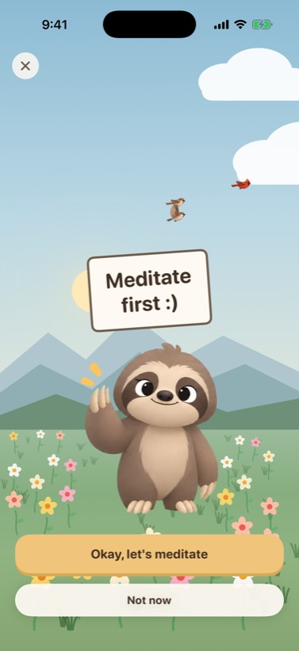
Zen move: an ema, the small wooden plaque people write a wish on, in place of the cardboard sign.
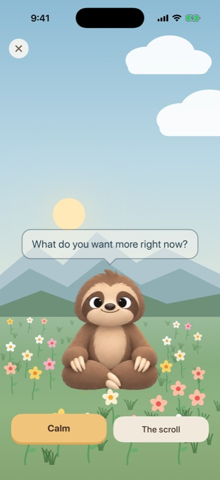
Zen move: the scene pass only.
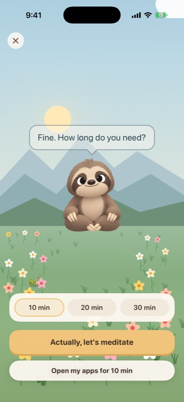
Zen move: the scene pass only.
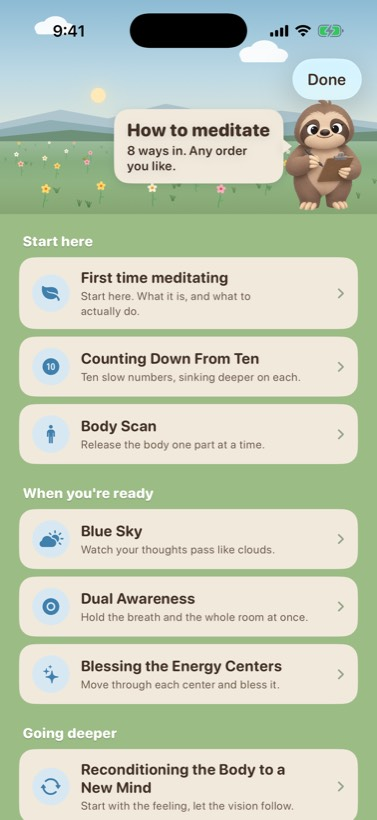
Reads generic: system symbols in blue discs, on a plain list.
Zen move: an ink drawing for each method (ten stones for Counting Down, one cloud for Blue Sky), and section labels in tracked small caps.
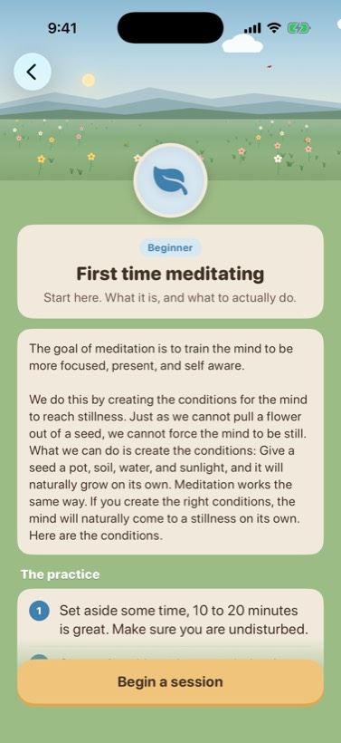
Zen move: long reading in a calm serif on a shorter line, and brush numerals for the steps.
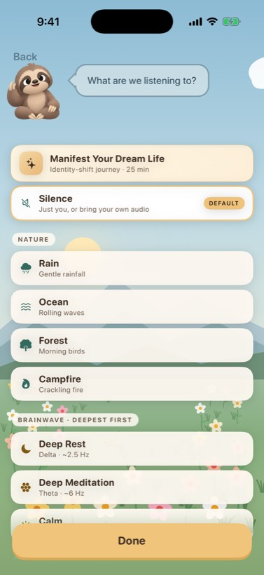
Reads generic: system icons for rain, waves, forest and fire.
Zen move: ink icons from the same set. The rows can stay as they are.
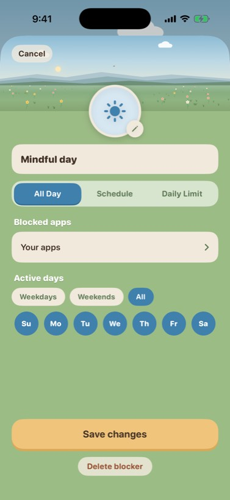
Zen move: indigo instead of sky blue for what's chosen, and an ink mark in the circle.
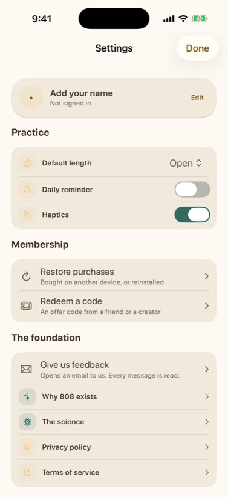
Zen move: low priority. Ink icons and sand, and otherwise leave it an honest settings list.
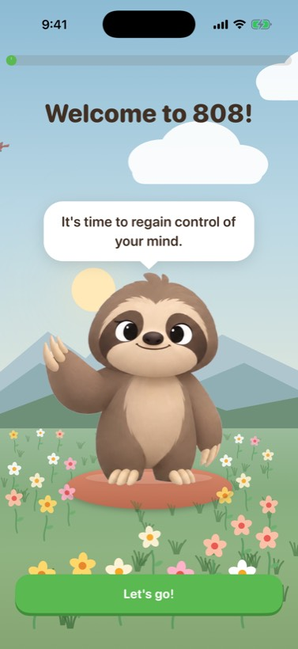
For Aziz: the green buttons are the brightest thing in onboarding. A moss green would sit inside the scene instead of on top of it.
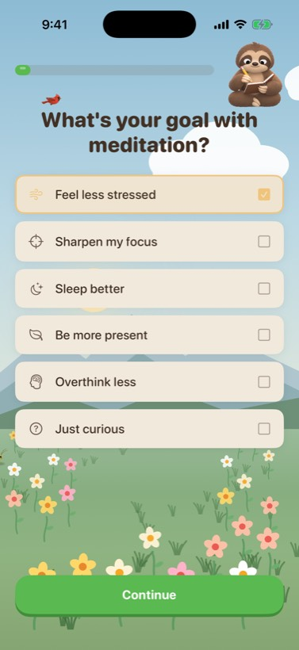
For Aziz: the answer plates are sand already. The scene pass would reach every screen here with no extra work.
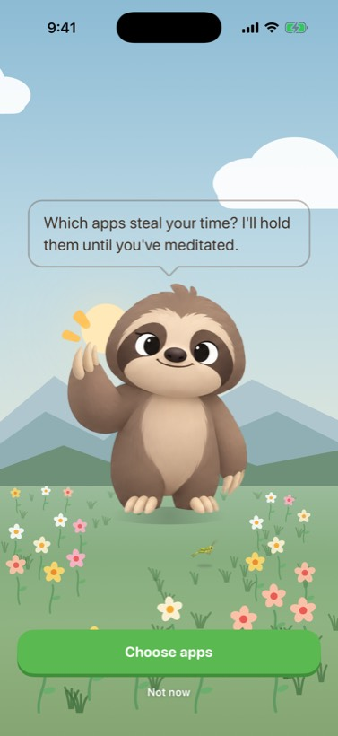
For Aziz: same as above. The cut-out sun and flat ridges are the same scene, so it gets the same fix.
Drawn here as a direction, not as final art. The real ink icons and seals would come off one ChatGPT sheet each, the way the tab bar did.
The sit's ring becomes a brush circle that paints itself closed as the time runs out.
Each ridge paler than the one in front, with haze pooled in the valleys. Every valley screen gets it at once.
A raked circle under his cushion, and one slow ripple when a session lands.
Home at night and the end of a sit. A big pale disc behind the ridge, and the only light in the sky.
A hanko in seal red, pressed on with a soft stamp. On the unlock screen, and as a row on Profile.
Stones, ensō, incense, rain, wave, pine: the tab bar's brush language, carried to the tiles, sounds, guide and blockers.
Quick paintings to show the direction, not pixel mockups. Otto is the real art.
The ring becomes an ensō that paints itself closed. The sky is misted instead of postcard blue, each ridge is paler than the last, and Otto sits on raked sand with grass and two stones in front instead of daisies.
This is the screen people stare at for ten minutes, so it's where the board matters most.
A big pale moon rises behind him, like the figure on the stone before the moon. There are fewer stars and faint mist over the ridge, and the raked sand catches the moonlight.
The bubble and the dimmed tiles already work, so they stay.
The gold squircle becomes a hanko: a seal-red stamp that presses down onto the sky. It's the most game-like screen today, and a seal is how you'd mark an achievement on paper in Japan.
The button turns kincha, a browner gold that belongs to the scene.
No torii gates, cherry-blossom petals, kanji as decoration, koi, paper lanterns, bamboo borders or gongs. None of them are on the board. The board is weather, light and a few honest materials, and that's what 808 borrows. If a change could be described as "adding Japanese stuff", it's the wrong change.